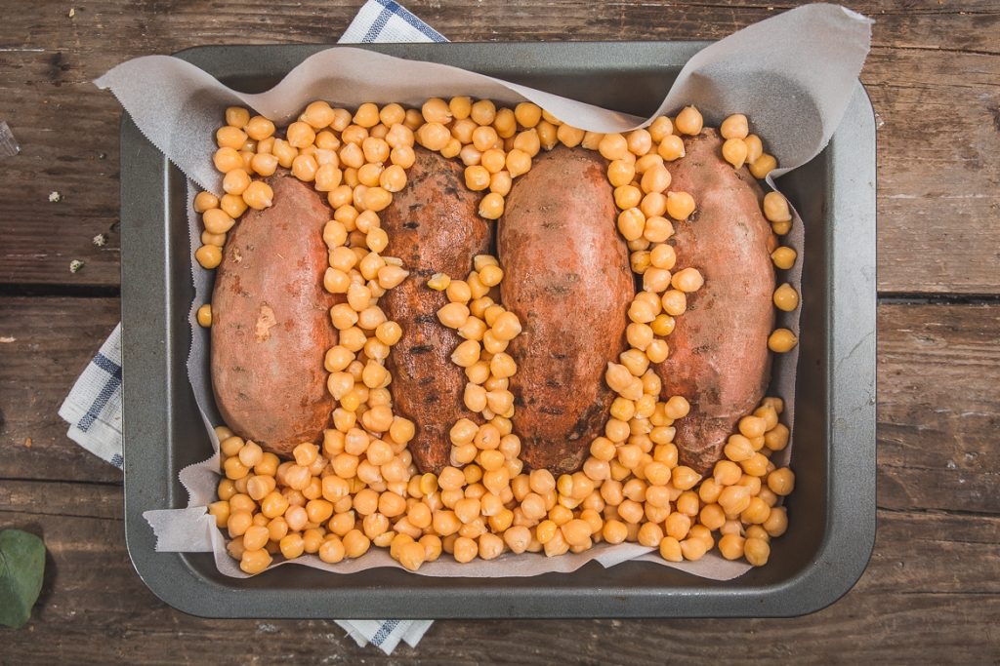
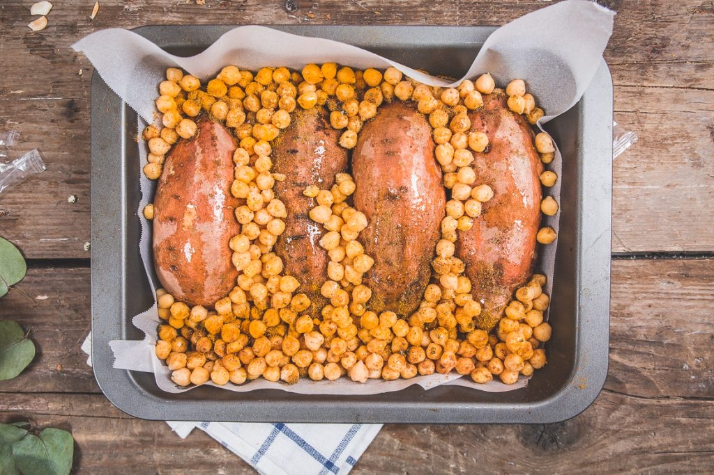

Patates douces au four

Aujourd’hui je vous retrouve avec une recette parfaite pour cette période d’automne! Des patates douces au four servies avec une sauce au tahine (crème de sésame) et des pois chiche grillés épicés! Un régal!
A nouveau, voici le type de recette que je me prépare régulièrement et qui fait partie de notre quotidien. Je raffole des patates douces! Au four principalement pour la cuisson, sous forme de frites ou encore dans des recettes telles que des soupes pour affronter l’hiver (retrouvez d’ailleurs ma recette gourmande de soupe de patate douce sur le blog). De plus en plus vous avez remarqué que je poste ici les recettes de tous les jours qui rythment nos semaine alors qu’avant je postais principalement les gâteaux que j’avais pu faire pour des occasions particulières, des brunchs, des goûters ou encore les repas gourmands du week-end. Bref tout ça pour dire je suis ravie de voir que ces recettes « simples et rapides » de tous les jours vous font plaisir et sont plutôt bien accueillies alors merci!
Pour en revenir à cette recette, je suis allée dans deux épiceries différentes pour choisir mes patates douces (oui j’ai un gros problème quand il s’agit de cuisine) et heureusement j’ai réussi à en trouver des correctes sinon je ne sais pas ou j’aurais du aller pour en trouver! Cette version a des petites notes orientales dans ces saveurs car on y retrouve du tahine (crème de sésame), des épices telles que du cumin, du quatre épices (mélange de cannelle, gingembre, girofle, muscade) et une touche de menthe (tout ce que l’on aime réunit en un seul et même plat!). L’avantage de cette recette c’est qu’elle est réalisable en 5 minutes montre en mains (bon ok 8 max promis!!). Les étapes sont très très simples, le résultat est divin (et l’odeur dans la cuisine pendant la cuisson et juste envoûtante!). Je vous laisse constater par vous même en lisant la recette! J’espère qu’elle vous plaira, belle journée à tous ♥
Ingrédients
- Patate douce - 2
- Pois chiche - 350-400g (poids net cuits)
- Cumin - 1 càc
- Graines de cumin - 1 pincée
- Quatre épices (Cannelle, gingembre, girofle, muscade) - 1 càs
- Paprika - 1/2 càc
- Huile d'olive - 1 filet
- Menthe - Quelques feuilles
- Sel, poivre
- Citron - 1 càs de jus de citron
- Yaourt grec, nature, de soja (comme vous preferez) - 1
- Tahine (crème de sésame) - 1 càs
- Cumin - 1 càc
- Cranberries
- Noix
- Graine de courge
- Amandes
Instructions
- Préchauffez le four à 200°C
- Coupez les patates douces en deux dans le sens de la longueur
- Déposez les dans un plat allant au four avec la chair des patates contre le plat (voir photo)
- Versez les pois chiche égouttés par dessus
- Dispersez les épices par dessus et un filet d'huile d'olive
- Enfournez pendant 40 minutes à 200°C en surveillant la cuisson
- En fin de cuisson, préparez la sauce
- Dans un bol mélangez le yaourt, le tahine (crème de sésame) le jus de citron (je vous conseille de goûter petit à petit pour avoir une sauce qui corresponde parfaitement à VOS goûts! Idem pour les épices)
- Mélangez, ajoutez les épices, sel poivre si besoin et mélangez à nouveau
- Ciselez des feuilles de menthe et réservez
- A la sortie du four, déposez 2 moitié de patate douce dans une assiette
- Ajoutez de la sauce sur chaque moitié
- Parsemez de pois chiche grillés et de menthe ciselée
- Ajoutez des noix, cranberries, graine de courge etc..
- Dégustez à la petite cuillère c'est prêt!!


Les tips de la communauté
Recette très populaire avec de nombreux retours positifs. Certains trouvent les pois chiches trop croquants ou la proportion trop grande. L'ajout de légumes (potimarron, carotte) fonctionne bien. L'auteure clarifie que les pois chiches grillés au four deviennent croquants volontairement.
Astuces
- Ajouter du potimarron et des carottes en cubes pour plus de légumes et de saveur
- Ajouter un peu de coriandre fraîche pour un plus aromatique
- Ajouter les pois chiches à mi-cuisson pour les garder légèrement croquants mais moelleux
- Remplacer le yaourt par de la crème fraîche ou du fromage blanc si sensibilité au lactose
Variantes suggérées
- Ajouter du potimarron et des carottes en cubes
- Version sans pois chiches ou avec quantité réduite pour moins de bourratif
Ajustements signalés
- Les pois chiches qui durcissent au four est un comportement normal ; réduire la quantité ou ajouter en mi-cuisson selon les préférences
- Le temps de cuisson varie selon la taille des patates douces, jusqu'à 1h pour une fonte optimale